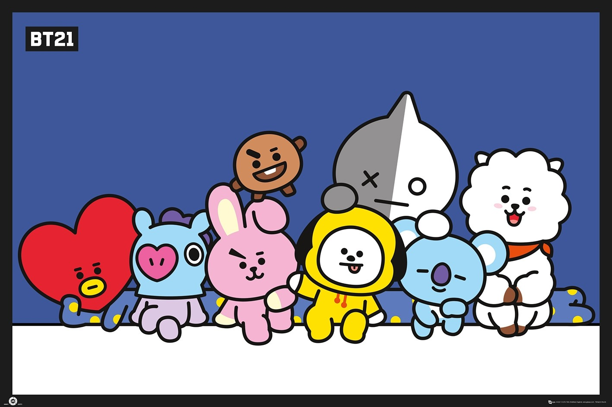

Introduction
Hello World! We are team number [?] of CPSC 481, tutorial 03, fall 2019 and welcome to our online portfolio for our group project, Barkipedia. Here, different stages of the project will be documented from start to end.

Our team consists of:
Daniel Tu, Marela Carlos, Sophia Le, Shanty Kamal, and Matthew Sardinha. Read more about us here.
The purpose of this project is for students to have firsthand experience on the user-centered design process. Students are responsible for suggesting a novel idea and engineering a tool for direct human use based on that idea.
What is User-Centered Design?
"An iterative design process that makes use of knowledge through investigation of a domain of work/play to create ideas and prototypes." (Tang, 2014)In UCD, design decisions are made by considering the needs of the end-users. In order to understand and learn of these needs, designers employ a variety of investigative methods and tools. Designers utilize the gathered data to identify user requirements and establish design solutions. From there, they will evaluate the resulting design against the users' requirements and will either repeat a previous stage or go ahead and implement the design. During the UCD process and even beforehand, the main focus is always the user.
The Project
Discover events around the city for you and your furry friend, make meaningful connections with other dog lovers, and access unlimited information about all things dog related on Barkipedia.
 With Barkipedia, we hope to be an easy and local solution for the needs of every dog lover whether it be a new dog owner struggling to introduce the new family member into their home or a long-time dog owner looking for a playdate for their pet.
With Barkipedia, we hope to be an easy and local solution for the needs of every dog lover whether it be a new dog owner struggling to introduce the new family member into their home or a long-time dog owner looking for a playdate for their pet.
Features
- CONNECT - Our Bark Overflow forum is available for both dog experts and novices and allows users to get advice and give advice.
- EXPLORE - Users are able to leave reviews of local dog services and easily locate the best groomer, vet, or dogsitter near them.
- MEET UP - Is your fur baby in need of a buddy? Check the upcoming meet ups page to find one near you or plan your own.
- LEARN - Barkipedia is the Wikipedia for dogs! Find helpful information on certain dog breeds or take a quiz to be matched with dog breeds that best fit you and your life.
References
Image Credit